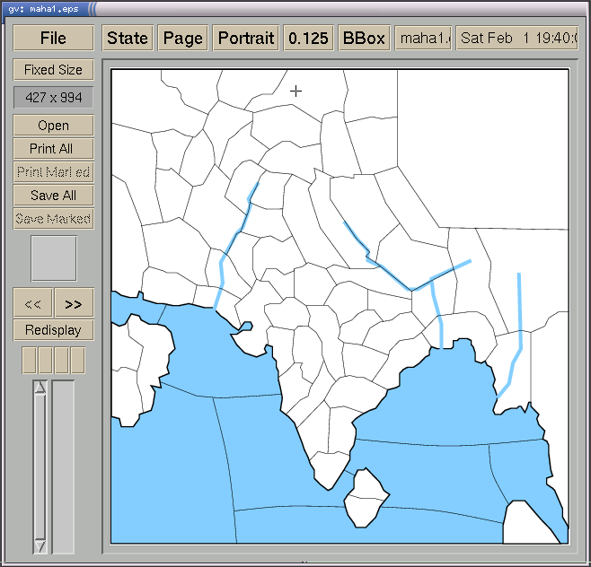

Every few months I get asked for instructions/help on making maps for either Alain Tesio's excellent floc.net online Diplomacy mapper. This page is an attempt at properly documenting the neccessary steps, and thereby reducing the times I need to re-explain this to different people.
Before you start, you should have access to the following software and files:
A vector drawing program which is able to save files as EPS (encapsulated postscript). Preferably tidy and compact EPS, but that's rather unlikely these days. I use xfig, but it's definitely an acquired taste. Unfortunately I can't recommend any good drawing programs for Windows/MacOS.
A copy of Mapit, the mapping program used by (at least) floc.net and DPJudge. You can use either the C version or the Python version.
Copies of the Mapit files produced by David Norman's MapMaker. Specifically, you'll need the .cmap.ps and .info files. The version of MapMaker that does this isn't publically available, so if you've just created the variant from ground up with MapMaker, you'll need to send David you MapMaker map, and he'll send you the neccessary Mapit files. Otherwise you can get the files used on floc.net from the CVS repository.
Please check that the files are truly up to date. These instructions will not work with old maps produced by MapMaker. Currently the best way to determine whether the map is new enough is to look for the string MapWindowHeight in it.
You should now draw a map for the variant using the vector drawing program mentioned before. Please follow these guidelines:
Do not draw supply centers or province names; they're added by Mapit.
Use a light blue for seas and white for land (to stay consistent with the current maps on floc.net).
You need to fit the province name, the unit, and possibly a supply center into the province. If the map contains any small provinces, you might want to make them larger even at the cost of geographical accuracy.
Avoid drawing too many details. This will increase the file size, and make the map harder to read when scaled to a small bitmap image.
For example, here is the EPS version of the map for Maharajah's Diplomacy.
If you're unsure of some of what some of the following parts mean, you might want to compare the original .cmap.ps and .info files to the .cmap.ps and .info files that resulted from following these instructions. If that doesn't help, I'll be happy to answer any questions you have.
After you update any files, you'll need to rerun Mapit for the changes to take effect in the output postscript file. Some PostScript viewers won't notice all changes that happen to a file that's modified. Zooming in/out should force it to reread all of the information.
Remove the PostScript functions starting with "Part_", and replace the calls to those functions in "DrawMap" with a single call to "doeps".
Remove everything from function "postmap", except the call to "grestore".
Add these lines after the "postmap" function.
Add the contents of your EPS file between the "%%BeginDocument" and "%%EndDocument" lines.
Your EPS file should contain a %%BoundingBox:-header, which basically describes its dimensions. Usually it'll be something like:
%%BoundingBox: 0 0 1042 1047
Modify the definitions of Bottom, Left, Top and Right to match these values (in the same order). E.g. for the above bounding box you should have these values:
/Top 1042 def /Left 0 def /Right 1047 def /Bottom 0 def
The MapMaker template contains some code to automatically detect whether it should produce a landscape or portrait map. If the map now appears rotated 90 degrees (as happens to me 75% of the time), you'll need to modify the line:
/PortraitFlag deltah deltav lt def % ...
to:
/PortraitFlag false def
If the map is mirrored along the X or Y axis, swap the values of Left/Right or Top/Bottom.
If the map has the wrong aspect ratio, modify the definitions of MapWindowHeight and MapWindowWidth.
Now follows the most tedious part of the process. You'll need to modify province coordinates in the .info file. Luckily, your PostScript viewer should be able to show the correct coordinates when you view the EPS file. Just move the pointer to a province, and replace the values for the province in the .info file with those reported by the viewer. The unit will appear right above the pointer and the name of the province right below it.
At this point everything but supply centers should be working correctly.
The coordinates of the supply center dots are defined near the end of the file. The coordinate system used is the same as the one used in the .info file, but shifted a bit downwards. This means that you can give them a dot the same coordinates as the ones given in the .info file form, and the dot will appear right below the name of the province.